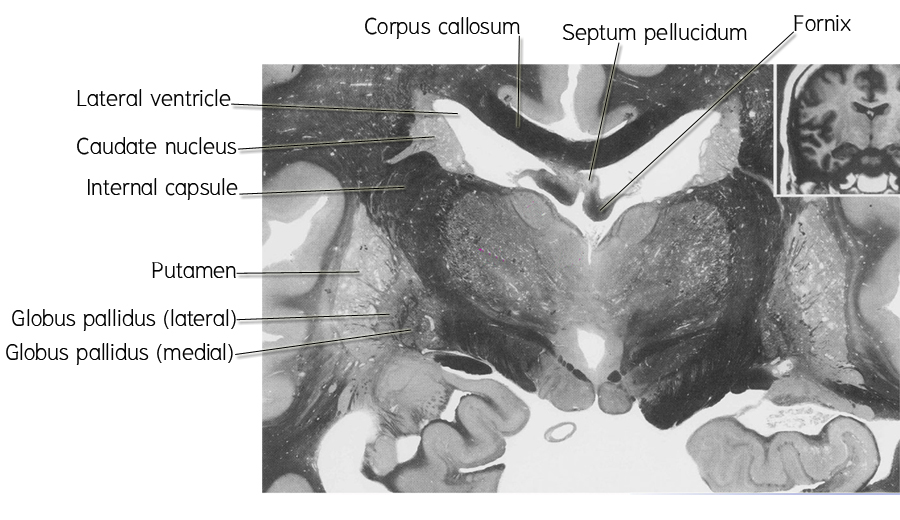
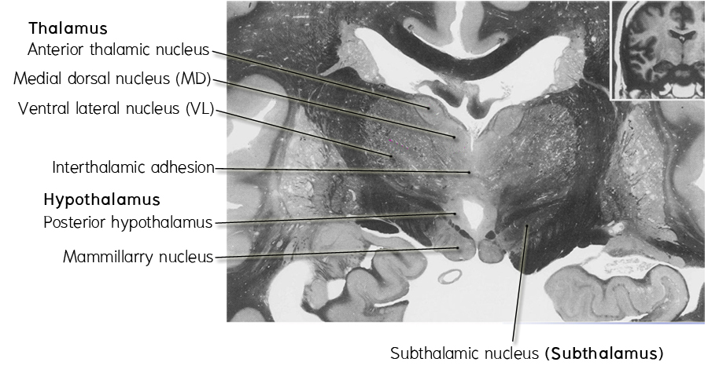

* Cerebral hemisphere ตัดผ่าน
- Corpus callosum, fornix, head of caudate nucleus, internal capsule และ lentiform nucleus
- Lateral ventricle ที่ถูกล้อมโดย corpus callosum, fornix และ head of caudate nucleus
- Third ventricle ที่ถูกแบ่งออกเป็นสองส่วนด้วย interthalamic adhesion
* Diencephalon ตัดผ่าน
- Thalamus โดยจะเห็น ventral lateral nucleus (VL), medial dorsal nucleus (MD) และเห็น
interthalamic adhesion
- Hypothalamus เห็น hypothalamic area ที่แทรกอยู่ระหว่าง mammillary bodies, third ventricle,
- Subthalamus เห็น subthalamic nucleus และ zona incerta
* Midbrain ตัดผ่าน substantia nigra (reticular part)
